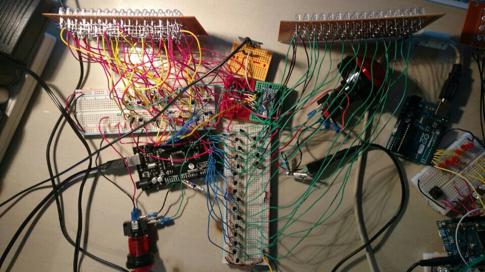

The Combat Ready Light Show was born in the summer of 2015 when the innovative thinkers of team BUINVENT realized that light shows needed improvement. LED light shows were in high demand and a good one was impossible to find. Consequently, The Combat Ready Light Show was inspired and development began.
The light show consists of 168 LEDs powered by an Arduino Mega and an Arduino mini. The Arduino mini powers the red LEDs and the Arduino Mega powers the rest. A catalex mp3 player is used for playing the audio. LED driving is done through NPN transistors hooked up to a 5 volt external power source. The board with the green LEDs on the left (right if you're looking at the picture) uses multiplexing and is composed of four rows of 16 LEDs.
Because there were two arduinos, there were two sets of software that needed to be written. The software consists
of a total of 1,149 lines of code.
Click here to view on GitHub.
: O